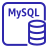

Sau bài này bạn sẽ
- Phân biệt rõ 7 chiến lược di chuyển (7 Rs): Retire, Retain, Rehost, Relocate, Repurchase, Replatform, Refactor – và nhận ra chiến lược đúng từ từ khóa trong đề.
- Biết cách khám phá và lập kế hoạch trước khi di chuyển: AWS Application Discovery Service (Agentless Collector vs Discovery Agent), AWS Migration Hub (home Region), DMS Fleet Advisor.
- Hiểu cách AWS Application Migration Service (MGN) rehost máy chủ: replication agent, staging area, port 443/1500, test → cutover → finalize, cửa sổ cutover tính bằng phút.
- Nắm kiến trúc AWS DMS: replication instance / DMS Serverless, endpoint, task, ba kiểu migration Full load, Full load + CDC, CDC only.
- Hiểu Change Data Capture (CDC) đọc transaction log thế nào, và cách dùng nó để di chuyển database gần như không downtime.
- Chọn đúng công cụ chuyển đổi schema cho migration heterogeneous: DMS Schema Conversion hoặc AWS SCT.
Bài 18 đã dạy cách đưa dữ liệu dạng file/object lên AWS (DataSync, Snow Family, Transfer Family, Storage Gateway); Bài 26–29 dạy RDS, Aurora, DynamoDB và các database chuyên dụng làm đích; Bài 42 dạy AWS Elastic Disaster Recovery – “anh em sinh đôi” của MGN. Bài này tập trung vào chiến lược di chuyển ứng dụng (7 Rs) và ba dịch vụ di chuyển chính: Application Migration Service cho máy chủ, Database Migration Service cho database, Migration Hub / Application Discovery Service cho khám phá và theo dõi. Phần tối ưu chi phí sau khi đã lên AWS học ở Bài 44.
 Bức tranh tổng quan về migration lên AWS
Bức tranh tổng quan về migration lên AWS
Migration là việc đưa ứng dụng, máy chủ và dữ liệu từ môi trường nguồn (data center on-premises, cloud khác, hoặc một VPC/account/Region khác) lên AWS. Đề SAA-C03 không hỏi bạn từng nút bấm trên console, mà hỏi: chọn chiến lược nào cho từng ứng dụng, và dùng dịch vụ nào để di chuyển máy chủ, database, file với ít downtime nhất, ít công vận hành nhất hoặc chi phí thấp nhất.
Ba giai đoạn của một dự án migration lớn
AWS Prescriptive Guidance mô tả các dự án migration lớn theo ba giai đoạn (đây là khung quen thuộc của AWS, nêu ở đây để định hướng):
- Assess (đánh giá) – xác định lý do kinh doanh, ước tính chi phí, đánh giá mức sẵn sàng của tổ chức.
- Mobilize (chuẩn bị) – khám phá danh mục ứng dụng (portfolio discovery), phân tích phụ thuộc, chọn chiến lược di chuyển (7 Rs) cho từng ứng dụng, dựng landing zone (nhiều account, mạng, bảo mật – Bài 5).
- Migrate & modernize (di chuyển và hiện đại hóa) – di chuyển theo từng wave, rồi tối ưu/hiện đại hóa sau khi đã chạy trên AWS.
AWS Application Discovery Service
Khám phá máy chủ on-premThu thập cấu hình, mức sử dụng CPU/RAM/disk, kết nối mạng giữa các server để lập kế hoạch và nhóm thành ứng dụng.
AWS Migration Hub
Trung tâm theo dõi migrationMột nơi duy nhất để xem server đã khám phá, nhóm thành ứng dụng và theo dõi tiến độ từ MGN và DMS; dữ liệu lưu ở home Region.
AWS Application Migration Service (MGN)
Rehost máy chủSao chép block-level liên tục máy chủ vật lý, ảo, cloud khác lên EC2; cutover trong vài phút. Dịch vụ khuyến nghị cho lift-and-shift.
AWS Database Migration Service (DMS)
Di chuyển databaseDi chuyển dữ liệu giữa các database cùng hoặc khác engine; full load + CDC giữ nguồn và đích đồng bộ cho tới lúc chuyển.
DMS Schema Conversion / AWS SCT
Chuyển đổi lược đồĐánh giá và chuyển schema + code (view, stored procedure, function) sang engine đích khác loại, vd Oracle → Aurora PostgreSQL.
DataSync, Snow Family, Transfer Family
Chuyển file/object (Bài 18)Dùng cho dữ liệu file/object (NFS, SMB, HDFS, S3…), không phải để di chuyển máy chủ hay database đang chạy.
- Tài liệu hiện tại gọi MGN là AWS Transform MGN; trong đề thi và nhiều tài liệu vẫn là AWS Application Migration Service (AWS MGN) – cùng một dịch vụ. MGN là thế hệ kế tiếp của CloudEndure Migration và thay cho AWS Server Migration Service (SMS) cũ (kiến thức phổ biến).
- AWS Migration Hub không còn mở cho khách hàng mới từ 7/11/2025; AWS Application Discovery Service cũng không còn mở cho khách hàng mới. AWS khuyến nghị AWS Transform cho năng lực tương tự. Đề SAA-C03 vẫn có thể nhắc tới hai dịch vụ này, nên bạn vẫn cần biết chúng làm gì.
Chuyển nhà là một ví dụ dễ hình dung. Trước hết bạn kiểm kê đồ đạc, xem món nào đi cùng món nào (Discovery). Rồi quyết định với từng món: vứt bỏ (Retire), để lại nhà cũ (Retain), khiêng nguyên si sang (Rehost), chở nguyên cả thùng container (Relocate), bán đi mua cái mới (Repurchase), sửa nhẹ cho vừa nhà mới (Replatform), hay đóng lại tủ mới hoàn toàn theo thiết kế nhà mới (Refactor). Cuối cùng là một tờ bảng theo dõi món nào đã chuyển xong (Migration Hub).
Bảy chiến lược di chuyển: 7 Rs
Theo AWS, một migration strategy là cách tiếp cận dùng để di chuyển một workload lên AWS Cloud. Có bảy chiến lược, gọi chung là 7 Rs. Mỗi ứng dụng trong danh mục được gán một chiến lược – thường trong giai đoạn mobilize hoặc đánh giá danh mục ban đầu.
| Chiến lược | Tên gọi khác | Làm gì | Ví dụ / công cụ |
|---|---|---|---|
| Retire | — | Ngừng hoặc lưu trữ ứng dụng, tắt các server của stack đó | Ứng dụng “zombie”, không còn giá trị kinh doanh |
| Retain | Revisit | Giữ lại ở môi trường nguồn, có thể di chuyển sau | Mainframe, phần cứng đặc thù, vừa nâng cấp xong, yêu cầu data residency |
| Rehost | Lift and shift | Chuyển lên AWS không thay đổi ứng dụng | AWS MGN, Cloud Migration Factory, VM Import/Export |
| Relocate | — | Chuyển nhiều server cùng lúc từ nền tảng on-prem sang phiên bản cloud của cùng nền tảng; hoặc chuyển tài nguyên sang VPC/Region/account khác | VMware on-prem → nền tảng VMware trên AWS; RDS DB instance sang VPC/account khác |
| Repurchase | Drop and shop | Thay bằng phiên bản/sản phẩm khác, thường là SaaS | CRM tự host → SaaS CRM; license truyền thống → SaaS |
| Replatform | Lift, tinker, and shift / lift and reshape | Chuyển lên và tối ưu một phần để tận dụng cloud, không đổi kiến trúc lõi | SQL Server tự quản → Amazon RDS for SQL Server; VM → container (App2Container); Windows → Linux; Graviton |
| Refactor | Re-architect | Thiết kế lại kiến trúc, tận dụng tối đa cloud-native | Monolith → microservices/serverless; mainframe → kiến trúc mới |
Retire – ngừng sử dụng
Dành cho ứng dụng muốn ngừng hoạt động hoặc lưu trữ; bạn có thể tắt các server của stack đó. Các trường hợp điển hình theo tài liệu:
- Không còn giá trị kinh doanh khi giữ lại hay đưa lên cloud; muốn bỏ chi phí duy trì và hosting.
- Giảm rủi ro bảo mật khi ứng dụng dùng hệ điều hành/thành phần hết hỗ trợ.
- Theo hiệu năng: ứng dụng có CPU và memory trung bình dưới 5% gọi là zombie application; trong khoảng 5–20% trong 90 ngày gọi là idle application. Dữ liệu sử dụng lấy từ công cụ discovery.
- Không có kết nối inbound nào tới ứng dụng trong 90 ngày gần nhất.
Retain – giữ lại
Giữ ứng dụng ở môi trường nguồn, hoặc ứng dụng chưa sẵn sàng di chuyển (có thể di chuyển sau). Các lý do tài liệu liệt kê:
- Bảo mật và tuân thủ – yêu cầu data residency.
- Rủi ro cao – cần đánh giá và lập kế hoạch chi tiết trước.
- Phụ thuộc – phải di chuyển ứng dụng khác trước.
- Vừa nâng cấp – hoãn tới đợt làm mới công nghệ tiếp theo.
- Không có giá trị khi di chuyển – vd ứng dụng chỉ vài người dùng nội bộ.
- Đợi bản SaaS – nhà cung cấp sắp ra phiên bản SaaS (sau đó Repurchase).
- Phụ thuộc vật lý chưa giải quyết – phần cứng đặc thù không có tương đương trên cloud, vd máy móc trong nhà máy.
- Mainframe, mid-range, Unix không phải x86 (vd IBM AS/400, Oracle Solaris) – cần đánh giá kỹ trước.
Rehost – lift and shift
Chuyển ứng dụng từ môi trường nguồn lên AWS không thay đổi gì ở ứng dụng. Theo tài liệu, rehost giúp di chuyển số lượng lớn máy từ nhiều nền tảng (vật lý, ảo, cloud khác) mà không lo về tương thích, gián đoạn hiệu năng, cửa sổ cutover dài hay sao chép dữ liệu đường dài. Ứng dụng vẫn phục vụ người dùng trong lúc di chuyển; downtime phụ thuộc chiến lược cutover. Rehost không tối ưu cloud ngay, nhưng ứng dụng đã chạy trên cloud thì dễ tối ưu hoặc re-architect hơn về sau. Công cụ tự động hóa: AWS MGN, AWS Cloud Migration Factory Solution, VM Import/Export.
Relocate – chuyển nguyên nền tảng
Chuyển một số lượng lớn server (một hoặc nhiều ứng dụng) cùng lúc từ nền tảng on-premises sang phiên bản cloud của chính nền tảng đó. Cũng dùng relocate để chuyển instance/object sang VPC, Region hoặc account khác – vd chuyển một RDS DB instance sang VPC hoặc account khác. Relocate không cần mua phần cứng mới, viết lại ứng dụng hay đổi quy trình vận hành; ứng dụng vẫn phục vụ trong lúc chuyển. Tài liệu gọi đây là cách nhanh nhất để di chuyển và vận hành workload trên cloud vì không ảnh hưởng kiến trúc tổng thể.
Repurchase – drop and shop
Thay ứng dụng bằng phiên bản hoặc sản phẩm khác mang lại nhiều giá trị hơn: truy cập từ mọi nơi, không phải bảo trì hạ tầng, giá pay-as-you-go. Thường giảm chi phí bảo trì, hạ tầng và license. Trường hợp dùng: chuyển từ license truyền thống sang SaaS; nâng cấp lên phiên bản mới hoặc sản phẩm bên thứ ba tương đương trên cloud; thay ứng dụng tự viết bằng SaaS để khỏi viết lại. Sau khi mua cần: đào tạo người dùng, di chuyển dữ liệu sang ứng dụng mới, tích hợp xác thực (vd Microsoft Active Directory), cấu hình mạng an toàn.
Replatform – lift, tinker, and shift
Chuyển ứng dụng lên cloud và tối ưu ở một mức độ để vận hành hiệu quả, giảm chi phí hoặc tận dụng năng lực cloud. Ví dụ kinh điển trong tài liệu: chuyển Microsoft SQL Server sang Amazon RDS for SQL Server. Các trường hợp khác:
- Chuyển sang dịch vụ fully managed hoặc serverless để tiết kiệm thời gian và chi phí.
- Nâng cấp hệ điều hành lên bản mới nhất để cải thiện bảo mật, tuân thủ.
- Dùng AWS Graviton để giảm chi phí.
- Chuyển từ Windows sang Linux; port .NET Framework sang .NET Core (công cụ Porting Assistant for .NET).
- Đưa VM vào container mà không sửa code – công cụ AWS App2Container cho ứng dụng .NET và Java.
Refactor / re-architect
Chuyển ứng dụng và thay đổi kiến trúc, tận dụng tối đa tính năng cloud-native để cải thiện agility, hiệu năng, khả năng mở rộng. Thường xuất phát từ nhu cầu kinh doanh mạnh: scale, ra tính năng nhanh hơn, giảm chi phí. Các trường hợp: mainframe không đáp ứng được hoặc quá đắt; monolith cản trở việc giao sản phẩm; ứng dụng cũ không ai biết bảo trì hoặc mất source code; khó kiểm thử; hoặc vì tuân thủ phải tách một số bảng (vd thông tin bệnh nhân) ở lại on-prem. Đây là chiến lược phức tạp và tốn kém nhất.
Các chiến lược phổ biến cho migration lớn: rehost, replatform, relocate, retire. Refactor không được khuyến nghị cho migration lớn vì phải hiện đại hóa ngay trong lúc di chuyển – phức tạp nhất và khó quản lý khi có nhiều ứng dụng. Thay vào đó: rehost / relocate / replatform trước, rồi hiện đại hóa sau khi migration hoàn tất. Chỉ refactor khi các chiến lược khác không chấp nhận được.
- “Migrate as quickly as possible… without changing the application / no code changes” ⇒ Rehost (MGN).
- “Move the self-managed database to a managed service to reduce operational overhead, minimal code changes” ⇒ Replatform (vd → Amazon RDS / Aurora).
- “Break the monolith into microservices / use serverless / cloud-native” ⇒ Refactor.
- “Replace with a SaaS product” ⇒ Repurchase. “Application is no longer used” ⇒ Retire. “Must stay on premises for compliance / mainframe” ⇒ Retain.
- “Move VMware workloads to the cloud without converting VMs or changing operations” hoặc “move an RDS instance to another account/VPC” ⇒ Relocate.
- Rehost ≠ Replatform: cài lại SQL Server trên EC2 vẫn là rehost (về bản chất); chuyển sang RDS mới là replatform vì đổi nền tảng vận hành sang managed.
- Replatform ≠ Refactor: replatform giữ kiến trúc lõi, chỉ “tinker” (vd đổi DB sang managed, đưa VM vào container không sửa code). Refactor đổi kiến trúc (vd tách microservices, dùng Lambda + DynamoDB).
- Đề hỏi “least effort / fastest” mà bạn chọn refactor là sai; refactor chỉ đúng khi đề nhấn mạnh agility, scalability, cloud-native và chấp nhận công sức lớn.
Khám phá & lập kế hoạch: Application Discovery Service, Migration Hub
Không thể chọn 7 Rs hay chia wave nếu không biết mình đang có gì. AWS Application Discovery Service giúp lập kế hoạch migration bằng cách thu thập dữ liệu sử dụng và cấu hình của server và database on-premises. Dịch vụ tích hợp với AWS Migration Hub và AWS DMS Fleet Advisor.
Ba cách thu thập dữ liệu
Agentless Collector
- Triển khai một file OVA qua VMware vCenter – không cài agent trên từng VM.
- Thu thập cấu hình tĩnh: hostname, IP, MAC, disk, phiên bản database engine và schema; mức dùng trung bình/đỉnh CPU, RAM, Disk I/O.
- Không “nhìn vào bên trong” VM ⇒ không biết process đang chạy (tài liệu: dùng thêm Discovery Agent khi cần chi tiết này).
- Chỉ VMware VM (không cho physical server); chu kỳ thu thập ~60 phút.
 Discovery Agent
Discovery Agent
- Cài trên từng VM và physical server, có bản Windows và Linux.
- Thu thập cấu hình tĩnh, time-series hiệu năng chi tiết, kết nối mạng inbound/outbound, process đang chạy.
- Chu kỳ thu thập ~15 giây; export dữ liệu sang Amazon Athena hoặc CSV để phân tích sâu.
- Dùng khi cần bản đồ phụ thuộc chi tiết giữa các server.
Cách thứ ba là file-based import (template của Migration Hub, hoặc export từ RVTools) – nhập trực tiếp thông tin môi trường mà không cần collector hay agent. Ngoài ra các giải pháp discovery của AWS Partner Network có thể ghi dữ liệu vào Application Discovery Service qua API công khai.
| Tiêu chí (theo bảng so sánh của AWS) | Agentless Collector | Discovery Agent | Import (template / RVTools) |
|---|---|---|---|
| VMware VM | Có | Có | Có |
| Physical server | Không | Có | Có |
| Triển khai | Một lần mỗi vCenter | Mỗi server | Không triển khai |
| Kết nối mạng giữa server (TCP) | Có | Có | Không |
| Process đang chạy | Không | Có | Không |
| Chu kỳ thu thập | ~60 phút | ~15 giây | Một snapshot |
| Export time-series / Athena | Không | Có | Không |
| Thông tin database (Oracle, SQL Server, MySQL, PostgreSQL) | Có (module database & analytics) | Không | Không |
Dữ liệu sử dụng và hiệu năng export được để đưa vào mô hình chi phí (ước tính chi phí chạy trên AWS), và dữ liệu kết nối mạng giúp xác định phụ thuộc giữa các server để nhóm thành ứng dụng – di chuyển các server phụ thuộc chặt cùng một wave. Từ dữ liệu này có thể tạo khuyến nghị EC2 (instance type phù hợp) dựa trên profile hoặc dữ liệu sử dụng.
AWS Migration Hub và home Region
AWS Migration Hub cung cấp một nơi duy nhất để khám phá server hiện có, lập kế hoạch và theo dõi trạng thái migration của từng ứng dụng, bất kể bạn dùng công cụ di chuyển nào. Nó nhận cập nhật trạng thái từ AWS MGN và AWS DMS.
- Home Region: lần đầu dùng, bạn phải chọn home Region – nơi lưu dữ liệu theo dõi migration và mọi dữ liệu discovery của Application Discovery Service. Phải chọn trước mọi thao tác ghi và trước khi discovery.
- Chỉ dữ liệu theo dõi nằm ở home Region – bạn vẫn di chuyển vào bất kỳ Region nào mà công cụ di chuyển hỗ trợ.
- Agent, collector, import chỉ dùng được ở home Region đã chọn.
- Các thành phần đi kèm: Strategy Recommendations (gợi ý chiến lược di chuyển/hiện đại hóa cho từng ứng dụng), Refactor Spaces (điểm khởi đầu để refactor dần sang microservices), Migration Hub Orchestrator (template workflow tự động hóa migration).
DMS Fleet Advisor – khám phá database
DMS Fleet Advisor thu thập dữ liệu từ nhiều môi trường database on-premises từ một hoặc vài vị trí trung tâm, không cần cài trên từng máy, rồi lập inventory server, database, schema để đánh giá tính khả thi của migration. Hiện hỗ trợ Microsoft SQL Server, MySQL, Oracle, PostgreSQL. Từ đó có thể tạo khuyến nghị đích (target recommendations) cho database nguồn.
- “Collect server utilization and dependency data from on-premises VMware environment to plan migration”: không được cài agent ⇒ Agentless Collector; cần process và network connection chi tiết trên cả physical server ⇒ Discovery Agent.
- “Single place to track migration progress across multiple tools / applications” ⇒ AWS Migration Hub.
- “Analyze discovered data with SQL” ⇒ export dữ liệu Discovery Agent sang Amazon Athena.
- “Right-size EC2 instances before migrating based on on-premises utilization” ⇒ dữ liệu từ Application Discovery Service → khuyến nghị EC2.
AWS Application Migration Service (MGN): rehost máy chủ
AWS Application Migration Service (MGN) tự động hóa việc di chuyển máy chủ vật lý, ảo và cloud lên AWS với downtime tối thiểu – theo tài liệu, cửa sổ cutover thường chỉ vài phút. MGN thực hiện continuous block-level replication các source server và chuyển đổi chúng để chạy native trên AWS, nhờ đó di chuyển số lượng lớn server không gặp vấn đề tương thích hay gián đoạn hiệu năng. Migration Hub mô tả MGN là dịch vụ chính được khuyến nghị cho lift-and-shift.
Kiến trúc và luồng dữ liệu
- Cài AWS Replication Agent lên từng source server (Windows Server và nhiều bản Linux; IPv4 và IPv6). Agent sao chép toàn bộ disk rồi tiếp tục sao chép mọi thay đổi block liên tục.
- Dữ liệu đi tới các replication server (EC2 nhỏ, chạy Amazon Linux 2023) trong staging area subnet – best practice là subnet riêng dành cho việc này – và được ghi vào EBS volume giá rẻ.
- Khi launch test hoặc cutover, MGN dùng conversion server chuyển đổi disk (driver, boot) để boot được trên EC2, rồi tạo instance trong operational subnet theo EC2 launch template của từng server. Replication agent bị gỡ bỏ khỏi test/cutover instance.
- Sau khi cutover thành công, finalize cutover ⇒ dừng sao chép, bỏ dữ liệu sao chép và terminate toàn bộ tài nguyên replication.
Yêu cầu mạng
| Luồng | Port | Mục đích |
|---|---|---|
| Source server → MGN API endpoint | TCP 443 | Tải/nâng cấp agent, hiển thị trạng thái replication, metric CPU/RAM, báo sự kiện (vd thay đổi disk), gửi thông tin phần cứng/ứng dụng, chuẩn bị test/cutover |
| Source server → staging area subnet | TCP 1500 | Truyền dữ liệu sao chép; mã hóa tại nguồn, nén, TLS 1.2 end-to-end, giải mã ở staging trước khi ghi vào volume |
| Staging area subnet → MGN API, EC2 endpoint | TCP 443 | Replication server tải phần mềm, báo trạng thái, metric, sự kiện. Ra Internet bằng public IP + Internet gateway hoặc private IP + NAT gateway |
| Staging area subnet → Amazon S3 | HTTPS | Replication và conversion server cần kho package AL2023 trên S3; subnet cô lập thì dùng S3 gateway endpoint với policy cho phép các bucket cần thiết |
Tài liệu lưu ý: không áp dụng SSL interception cho kết nối giữa source/replication server và MGN API. Với server domain-joined, VPC đích phải có kết nối và DNS tới domain controller; khi test, cô lập test VPC khỏi mạng production để client production không “bám” nhầm vào domain controller vừa launch.
Template và quản lý ở quy mô lớn
- Ba loại template: replication (staging subnet, cấu hình replication server…), launch (EC2 launch template: subnet, instance type, security group, license…), post-launch (hành động sau khi launch, vd chạy SSM document). Template áp cho mỗi server mới thêm vào, có thể override từng server.
- Nhóm server thành application và application thành wave; launch, cutover, archive thực hiện được ở mức server, application hoặc wave.
- Sao chép vào AZ thường hoặc Local Zone không cần cấu hình đặc biệt (khuyến nghị đặt staging subnet ở Region cha).
- Sau khi rehost, có thể dùng dịch vụ AWS để replatform hoặc refactor – rehost là bước đầu nhanh để tiến tới hiện đại hóa.
Vòng đời: test → cutover → finalize
- Test: best practice là test ít nhất hai tuần trước ngày cutover để kịp phát hiện và sửa lỗi. Launch tối đa 100 source server mỗi thao tác. Windows source server cần ít nhất 2 GB dung lượng trống để launch test. Test instance tính phí EC2/EBS bình thường – terminate khi xác nhận xong.
- Cutover: thực hiện vào ngày giờ định sẵn. Thực tế: dừng ứng dụng nguồn, chờ sao chép bắt kịp, launch cutover instance, rồi chuyển DNS/traffic sang AWS – downtime chỉ bằng khoảng thời gian này.
- Finalize cutover: trạng thái thành Cutover complete, dừng sao chép, bỏ dữ liệu sao chép, terminate mọi tài nguyên replication; data replication thành Disconnected, bước tiếp theo là Mark as archived.
- Agentless replication (qua MGN vCenter Client, dạng snapshot) không còn cho triển khai mới; AWS khuyến nghị agent-based vì hỗ trợ CDP (continuous data protection) và cửa sổ cutover ngắn nhất.
Chi phí
Theo trang giá, MGN có thời gian sử dụng miễn phí cho mỗi source server (tài liệu học thường nêu 90 ngày ≈ 2.160 giờ – trang giá hiện không ghi rõ con số). Bạn vẫn trả tiền cho hạ tầng sao chép (replication server EC2, EBS staging) trong lúc sao chép – kể cả trong thời gian miễn phí – và cho EC2/EBS của test/cutover instance. Vì vậy hãy finalize cutover sớm để dừng chi phí staging.
AWS MGN
- Mục đích: di chuyển hẳn (rehost) lên AWS, rồi tắt nguồn.
- Sao chép liên tục tạm thời – kết thúc khi finalize cutover.
- Từ khóa: “lift-and-shift”, “migrate hundreds of servers”, “minimal downtime cutover”.
 AWS Elastic Disaster Recovery (Bài 42)
AWS Elastic Disaster Recovery (Bài 42)
- Mục đích: DR liên tục – nguồn vẫn chạy, AWS là site dự phòng.
- Sao chép lâu dài, PIT snapshot, drill, failback.
- Cùng kiến trúc agent/staging/TCP 1500 – đừng nhầm mục đích.
 VM Import/Export
VM Import/Export
- Nhập image VM (VMware, Hyper-V…) thành AMI / EC2 instance; export ngược lại.
- Dựa trên file image, không sao chép liên tục ⇒ thay đổi sau lúc export không được mang theo, downtime dài hơn (kiến thức phổ biến).
- Hợp với số ít VM, hoặc khi muốn giữ image chuẩn từ on-prem.
- “Migrate hundreds of on-premises VMware and physical servers to Amazon EC2 with minimal downtime and least operational overhead, no application changes” ⇒ AWS Application Migration Service.
- “Validate the migrated servers before cutover without affecting the source” ⇒ launch test instances trong MGN (không gián đoạn nguồn).
- Thấy “AWS Server Migration Service (SMS)” hoặc “CloudEndure Migration” ⇒ dịch vụ cũ; đáp án hiện đại là MGN.
- Replication bị kẹt ⇒ kiểm tra firewall cho TCP 1500 (source → staging) và TCP 443 (tới MGN endpoint).
 AWS Database Migration Service (DMS): kiến trúc
AWS Database Migration Service (DMS): kiến trúc
AWS Database Migration Service (AWS DMS) là dịch vụ cloud giúp di chuyển relational database, data warehouse, NoSQL database và các data store khác – lên AWS hoặc giữa các tổ hợp cloud và on-premises. Ở mức cơ bản, DMS là một server trên AWS chạy phần mềm replication: bạn tạo kết nối nguồn và đích, rồi lên lịch một task chạy trên server đó để di chuyển dữ liệu. DMS tự tạo bảng và primary key ở đích nếu chưa có.
Các thành phần
| Thành phần | Vai trò | Chi tiết đáng nhớ |
|---|---|---|
| Database discovery (DMS Fleet Advisor) | Kiểm kê database on-prem | SQL Server, MySQL, Oracle, PostgreSQL |
| Schema conversion (DMS Schema Conversion) | Chuyển schema + code cho engine khác loại | Instance profile, data provider, migration project |
| Replication instance | EC2 instance được quản lý chạy một hoặc nhiều replication task | Kèm 50 GB hoặc 100 GB storage tùy instance class; migration lớn/nhiều task ⇒ instance lớn vì DMS tốn nhiều CPU/RAM; hỗ trợ Multi-AZ (standby đồng bộ ở AZ khác, tự failover) |
| Endpoint | Thông tin kết nối tới source hoặc target | Loại (source/target), engine, server, port, SSL mode, credential; console bắt buộc test connection thành công; một endpoint dùng được cho nhiều task |
| Replication task | Di chuyển một tập dữ liệu từ source endpoint tới target endpoint | Chọn migration type, target table preparation mode, LOB mode, table mapping, transformation, data validation, CloudWatch logging |
Ba kiểu migration của một task
| Migration type | Làm gì | Khi nào dùng |
|---|---|---|
| Full load (migrate existing data) | Copy dữ liệu hiện có từ nguồn sang đích, tạo bảng khi cần | Chấp nhận được outage đủ dài để copy hết dữ liệu |
| Full load + CDC (migrate existing data and replicate ongoing changes) | Full load đồng thời ghi nhận thay đổi ở nguồn; xong full load thì apply thay đổi đã ghi; tiếp tục sao chép tới trạng thái ổn định | Migration downtime tối thiểu – lựa chọn phổ biến nhất trong đề |
| CDC only (replicate data changes only) | Chỉ sao chép thay đổi từ một thời điểm | Bulk load bằng công cụ native (thường hiệu quả hơn khi homogeneous), rồi DMS đồng bộ thay đổi; hoặc sao chép liên tục sang hệ thống khác |
- Target table preparation mode: Do nothing (bảng đã tạo sẵn), Drop tables on target (xóa và tạo lại), Truncate (xóa dữ liệu trước khi migrate).
- LOB mode: Don't include LOB columns; Full LOB mode (migrate LOB đầy đủ theo từng chunk – chậm hơn); Limited LOB mode (cắt LOB theo Max LOB Size – nhanh hơn).
- Table mapping và transformation: chọn bảng/schema cần chuyển, đổi tên schema/bảng/cột, định nghĩa primary key và unique index ở đích.
- Views chỉ migrate được bằng task full load only; task có CDC chỉ gồm bảng.
- DMS là pay-as-you-go, tự quản lý hardware/software và patch; automatic failover sang replication server dự phòng khi server chính lỗi (Multi-AZ).
AWS DMS Serverless
Thay vì tự chọn và quản lý replication instance, DMS Serverless tự động provision, scale, có high availability tích hợp và tính tiền theo mức dùng – bỏ việc ước tính capacity, quản lý phiên bản engine, patch. Bạn tạo replication (thay cho instance + task) với min/max DMS capacity units (DCU).
- Quy trình: Initializing → Testing Connection → Fetching Metadata → Calculating Capacity → Provisioning Capacity → Replication Starting → Running. Lần đầu có thể mất tới 40 phút để khởi tạo tài nguyên.
- Autoscale giữa min và max DCU; không scale down trong lúc full load. Khuyến nghị đặt max cao, min đủ cho các đợt tăng đột biến.
- Tùy chọn MultiAZ: khuyến nghị bật nếu dùng CDC/ongoing replication.
- “Migrate an on-premises database to Amazon RDS / Aurora with minimal downtime” ⇒ AWS DMS full load + CDC (cùng engine: không cần chuyển schema).
- “Avoid capacity planning / managing replication instances” ⇒ DMS Serverless.
- “High availability for a long-running DMS migration” ⇒ replication instance Multi-AZ.
- Cùng engine: công cụ native (dump/restore, backup/restore) có thể nạp lần đầu nhanh hơn, rồi dùng CDC only để bắt kịp.
 Continuous replication (CDC): di chuyển database gần như không downtime
Continuous replication (CDC): di chuyển database gần như không downtime
Change data capture (CDC) – còn gọi là ongoing replication – là việc DMS ghi nhận các thay đổi liên tục ở data store nguồn và áp dụng sang đích. DMS làm điều này bằng cách đọc transaction log của database thông qua API native của engine, nên không phải query lại bảng và ít ảnh hưởng tới nguồn.
DMS đọc thay đổi từ đâu?
| Engine nguồn | Cơ chế CDC | Cấu hình cần có |
|---|---|---|
| Oracle | Oracle LogMiner API hoặc binary reader; đọc online/archive redo log theo SCN | Supplemental logging |
| Microsoft SQL Server | MS-Replication hoặc MS-CDC; đọc transaction log theo LSN | Bật MS-CDC / publication |
| MySQL / MariaDB / Aurora MySQL | Đọc row-based binary log (binlog) | Row-level binlog; với RDS cần bật automated backup |
| PostgreSQL / Aurora PostgreSQL | Logical replication slot + plugin test_decoding | RDS/Aurora PostgreSQL tự giữ WAL cần thiết |
| Amazon RDS (nói chung) | Như engine tương ứng | Bật backup; giữ change log đủ lâu – 24 giờ thường là đủ |
CDC hoạt động bên trong replication instance
- Task stream thay đổi từ nguồn sang đích bằng bộ đệm trong bộ nhớ. Nếu bộ đệm cạn – vd DMS bắt thay đổi nhanh hơn tốc độ ghi vào đích – thay đổi được tràn xuống Change Cache trên disk. Khi đó target latency vượt source latency (metric
CDCLatencyTarget>CDCLatencySource) ⇒ cần tối ưu phía đích (vd đích thiếu primary key/index, thiếu tài nguyên). - CDC có thể làm dữ liệu ghi ra disk ⇒ migration có transaction lớn hoặc nhiều thay đổi nên tăng storage của replication instance.
- Quan trọng: tài liệu ghi rõ DMS CDC không phải sao chép real-time, không có SLA về độ trễ; độ trễ có thể lên vài phút hoặc hơn tùy workload nguồn, mạng, tài nguyên replication, khả năng ghi của đích.
- Điểm bắt đầu CDC: theo thời gian tùy chọn (DMS đổi sang native point như LSN/SCN; PostgreSQL không hỗ trợ), theo native start point (LSN, SCN, binlog file:position) hoặc theo checkpoint DMS ghi lại (dùng để khôi phục task lỗi hoặc mở task CDC mới cho đích khác). Điểm bắt đầu cố định sau khi tạo task.
- Bidirectional replication: hai task ngược chiều (A→B, B→A) với loopback prevention; hỗ trợ Oracle, SQL Server, MySQL, PostgreSQL, Aurora MySQL/PostgreSQL. Tài liệu nhấn mạnh không phải giải pháp multi-master: không phát hiện/giải quyết xung đột – chỉ dùng khi dữ liệu ở mỗi node được tách biệt về nghiệp vụ.
- “Keep the source database operational during migration / minimize downtime / replicate ongoing changes” ⇒ DMS với CDC (full load + CDC).
- “Continuously replicate changes from an on-premises database to Amazon S3 / Redshift / Kinesis for analytics” ⇒ DMS CDC với đích S3/Redshift/Kinesis (DMS Serverless hỗ trợ cả Kinesis Data Streams, MSK, OpenSearch, Neptune làm đích).
- CDC trên RDS MySQL nguồn thất bại ⇒ kiểm tra đã bật automated backups và binlog row format, thời gian giữ binlog đủ (~24 giờ).
- Đề yêu cầu “real-time, guaranteed sub-second replication” hoặc “multi-Region DR cho Aurora” ⇒ DMS không phải đáp án (không có SLA latency); dùng Aurora Global Database / read replica (Bài 27, 42).
- Bidirectional DMS không giải quyết xung đột ⇒ không dùng cho multi-master ghi cùng dữ liệu.
- Đồng bộ file share/NFS lên AWS ⇒ DataSync (Bài 18), không phải DMS.
Homogeneous vs heterogeneous: DMS Schema Conversion và AWS SCT
Khi engine nguồn và đích giống nhau (homogeneous migration, vd MySQL → Amazon RDS for MySQL), schema tương thích sẵn – chỉ cần di chuyển dữ liệu. Khi engine khác nhau (heterogeneous migration, vd Oracle → Aurora PostgreSQL), bạn phải chuyển đổi schema và code (stored procedure, function, view, trigger) trước, rồi mới dùng DMS chuyển dữ liệu.

RDS / Aurora MySQLDMS Schema Conversion
- Tính năng fully managed, chạy trên web của DMS, dựa trên engine chuyển đổi của AWS SCT; chuyển schema nguồn sang định dạng tương thích với Aurora, Amazon RDS hoặc Amazon Redshift.
- Ba tài nguyên: instance profile (mạng, bảo mật, mã hóa), data provider (thông tin kết nối một database), migration project (ghép source + target data provider + instance profile, credential trong AWS Secrets Manager).
- Assessment report: cho biết phần nào chuyển tự động, phần nào phải làm tay ⇒ ước tính công sức trước khi cam kết migration.
- Chuyển đổi bằng rule-based engine (kết quả nhất quán, lặp lại được); phần rule không chuyển hết có thể dùng generative AI để chuyển thêm (ở một số cặp như Oracle/SQL Server/Db2/SAP ASE → PostgreSQL).
- Apply code đã chuyển vào đích hoặc export SQL script ra S3; tính năng nguồn mà đích không có thì dùng extension pack để giả lập.
- Chưa có đích? Dùng virtual target rồi thêm database thật trước khi apply.
| Nguồn | Đích được hỗ trợ (DMS Schema Conversion) |
|---|---|
| Oracle | Aurora/RDS for PostgreSQL, Aurora/RDS for MySQL, Amazon Redshift |
| SQL Server | Aurora/RDS for PostgreSQL, Aurora/RDS for MySQL |
| PostgreSQL | Aurora/RDS for MySQL |
| MySQL | Aurora/RDS for PostgreSQL |
| IBM Db2 for LUW | Aurora/RDS for PostgreSQL |
| IBM Db2 for z/OS | Aurora/RDS for PostgreSQL, Amazon RDS for Db2 (chỉ qua API/CLI) |
| SAP ASE | Aurora/RDS for PostgreSQL |
DMS Schema Conversion
- Managed, trên console, không cài đặt; dùng được qua CLI/SDK.
- Tích hợp sẵn trong DMS (migration project, data provider).
- Lựa chọn mặc định khi đề nói “least operational overhead”.
 AWS Schema Conversion Tool (AWS SCT)
AWS Schema Conversion Tool (AWS SCT)
- Ứng dụng tải về cài trên máy tính cá nhân để chuyển schema.
- Là engine gốc mà DMS Schema Conversion dựa vào.
- Đề cũ hay nhắc “use AWS SCT to convert the schema, then AWS DMS to migrate the data”.
- “Migrate Oracle / SQL Server to Aurora PostgreSQL / MySQL” (đổi engine) ⇒ AWS SCT hoặc DMS Schema Conversion cho schema + AWS DMS cho dữ liệu. Thiếu bước chuyển schema là phương án sai.
- “Migrate an on-premises data warehouse (Oracle, Teradata…) to Amazon Redshift” ⇒ chuyển schema (SCT/DMS SC) + DMS.
- “Estimate the effort/complexity of converting the database” ⇒ assessment report của DMS Schema Conversion / SCT.
- Homogeneous (MySQL → RDS MySQL) ⇒ không cần SCT.
Tổng hợp: từ khóa trong đề ⇒ công cụ di chuyển
Đề migration thường trộn nhiều loại tài nguyên trong cùng một tình huống: máy chủ ứng dụng, database, file share, dữ liệu lưu trữ lâu năm. Hãy tách từng loại và chọn công cụ phù hợp cho mỗi loại.
| Cái cần di chuyển / yêu cầu | Dịch vụ | Ghi chú |
|---|---|---|
| Nhiều máy chủ (vật lý, VMware, Hyper-V, cloud khác) lên EC2, không sửa ứng dụng, downtime phút | AWS MGN | Rehost; block-level liên tục, test rồi cutover |
| Một vài image VM thành AMI | VM Import/Export | Không sao chép liên tục |
| Database cùng engine, downtime tối thiểu | AWS DMS full load + CDC | Hoặc native tool + DMS CDC only |
| Database khác engine (Oracle → PostgreSQL) | DMS Schema Conversion / AWS SCT + AWS DMS | Schema trước, dữ liệu sau |
| Kiểm kê server, mức sử dụng, phụ thuộc mạng | Application Discovery Service | Agentless Collector (VMware) / Discovery Agent (chi tiết, cả physical) |
| Kiểm kê database on-prem | DMS Fleet Advisor | SQL Server, MySQL, Oracle, PostgreSQL |
| Theo dõi tiến độ migration nhiều ứng dụng/công cụ | AWS Migration Hub | Home Region; nhận trạng thái từ MGN, DMS |
| File share NFS/SMB, HDFS, object storage → S3/EFS/FSx qua mạng | AWS DataSync (Bài 18) | Online, có lịch, kiểm tra toàn vẹn |
| Hàng trăm TB, băng thông yếu, offline | Snow Family (Bài 18) | Chuyển vật lý |
| Đối tác vẫn gửi file qua SFTP/FTPS | AWS Transfer Family (Bài 18) | Endpoint SFTP được quản lý |
| Đưa VM vào container không sửa code | AWS App2Container | Replatform .NET/Java |
| Chuyển ứng dụng sang SaaS | Repurchase | Không phải dịch vụ di chuyển máy chủ |
- Câu hỏi kiểu “company wants to migrate a three-tier application: web/app servers + Oracle DB + NFS share” ⇒ thường là MGN (server) + DMS (+ SCT nếu đổi engine) (DB) + DataSync (file) – mỗi tầng một công cụ.
- Database chạy trên VM có thể đi theo MGN (rehost nguyên VM), nhưng nếu đề muốn giảm operational overhead / managed database ⇒ replatform sang RDS/Aurora bằng DMS.
- “Least operational overhead” + migration ⇒ ưu tiên dịch vụ managed (MGN, DMS Serverless, DMS Schema Conversion) hơn script tự viết hay công cụ tự cài.
Tóm tắt ghi nhớ
- 7 Rs: Retire (tắt – zombie < 5% CPU/RAM), Retain (giữ lại – mainframe, data residency, mới nâng cấp), Rehost (lift and shift – MGN), Relocate (cùng nền tảng, VPC/Region/account khác – nhanh nhất), Repurchase (drop and shop – SaaS), Replatform (lift, tinker, and shift – vd SQL Server → RDS), Refactor (re-architect – cloud-native, phức tạp nhất).
- Migration lớn: rehost/relocate/replatform trước, hiện đại hóa sau; không khuyến nghị refactor trong lúc di chuyển.
- Application Discovery Service: Agentless Collector (OVA trên vCenter, ~60 phút, không thấy process) vs Discovery Agent (mỗi server, ~15 giây, có process + kết nối mạng, export Athena). Dữ liệu lưu ở Migration Hub home Region.
- Migration Hub: một nơi theo dõi tiến độ từ MGN và DMS; home Region chỉ chứa dữ liệu theo dõi. (Không còn mở cho khách hàng mới từ 7/11/2025 – thay bằng AWS Transform.)
- AWS MGN: agent → replication server trong staging subnet (TCP 1500, TLS 1.2; TCP 443 tới API) → conversion server → test/cutover instance theo launch template. Test ≥ 2 tuần trước cutover; tối đa 100 server mỗi lần launch; finalize ⇒ dừng sao chép, xóa tài nguyên staging. Nhóm theo application/wave.
- AWS DMS: replication instance (EC2 được quản lý, 50/100 GB, Multi-AZ) + source/target endpoint + task. Migration type: Full load / Full load + CDC / CDC only. DMS Serverless: DCU = 2 GB RAM, autoscale min–max.
- CDC đọc transaction log bằng API native (Oracle LogMiner, SQL Server MS-CDC, MySQL binlog, PostgreSQL logical replication slot) – không real-time, không có SLA latency. Full load + CDC ⇒ downtime chỉ bằng thời gian cutover.
- Heterogeneous ⇒ chuyển schema/code bằng DMS Schema Conversion (managed) hoặc AWS SCT (tải về), rồi DMS chuyển dữ liệu. Homogeneous ⇒ chỉ cần DMS/công cụ native.
- File/object ⇒ DataSync/Snow/Transfer Family (Bài 18); DR liên tục ⇒ Elastic Disaster Recovery (Bài 42) – đừng nhầm với MGN.
Thuật ngữ (Glossary)
- Migration strategy / 7 Rs
- Chiến lược di chuyển – bảy cách tiếp cận để đưa workload lên AWS.
- Retire
- Ngừng sử dụng – tắt hoặc lưu trữ ứng dụng không còn giá trị.
- Retain
- Giữ lại – để ứng dụng ở môi trường nguồn, có thể xem xét lại sau.
- Rehost (lift and shift)
- Chuyển nguyên trạng – lên AWS không đổi ứng dụng.
- Relocate
- Chuyển nguyên nền tảng – sang phiên bản cloud của cùng nền tảng, hoặc sang VPC/Region/account khác.
- Repurchase (drop and shop)
- Mua lại sản phẩm khác – thường thay bằng SaaS.
- Replatform (lift, tinker, and shift)
- Đổi nền tảng, tối ưu một phần – vd chuyển DB tự quản sang RDS.
- Refactor / Re-architect
- Tái cấu trúc – thiết kế lại theo cloud-native.
- Zombie / Idle application
- Ứng dụng xác sống / nhàn rỗi – CPU & RAM < 5% / 5–20% trong 90 ngày.
- Wave
- Đợt di chuyển – nhóm ứng dụng được di chuyển cùng nhau.
- Cutover
- Chuyển giao sang hệ thống mới – thời điểm chuyển production sang AWS.
- AWS Application Discovery Service
- Dịch vụ khám phá ứng dụng – thu thập cấu hình, mức sử dụng, phụ thuộc của server on-prem.
- Agentless Collector / Discovery Agent
- Bộ thu thập không cần agent (OVA trên vCenter) / agent khám phá cài trên từng server.
- AWS Migration Hub / Home Region
- Trung tâm di chuyển / Vùng gốc lưu dữ liệu discovery và theo dõi migration.
- DMS Fleet Advisor
- Bộ tư vấn đội database – kiểm kê database on-prem để lập kế hoạch.
- AWS Application Migration Service (MGN)
- Dịch vụ di chuyển ứng dụng – rehost máy chủ bằng sao chép block-level liên tục.
- Replication / Launch / Post-launch template
- Mẫu cấu hình sao chép / khởi chạy / sau khởi chạy trong MGN.
- Test instance / Cutover instance
- Instance kiểm thử / instance chuyển giao launch từ dữ liệu sao chép.
- Conversion server
- Máy chủ chuyển đổi – chỉnh disk để boot native trên EC2.
- Finalize cutover
- Hoàn tất chuyển giao – dừng sao chép, xóa tài nguyên staging.
- AWS Database Migration Service (DMS)
- Dịch vụ di chuyển cơ sở dữ liệu.
- Replication instance
- Instance sao chép – EC2 được quản lý chạy các task DMS.
- Source / Target endpoint
- Điểm kết nối nguồn / đích của DMS.
- Replication task
- Tác vụ sao chép – di chuyển một tập dữ liệu từ nguồn sang đích.
- Full load
- Nạp toàn bộ – copy dữ liệu hiện có.
- Change data capture (CDC) / Ongoing replication
- Thu thập dữ liệu thay đổi / sao chép liên tục – đọc transaction log để áp dụng thay đổi.
- Transaction log (redo log, binlog, WAL)
- Nhật ký giao dịch – nguồn dữ liệu cho CDC.
- LOB mode (Full / Limited)
- Chế độ xử lý đối tượng lớn – đầy đủ (chậm) / cắt theo kích thước tối đa (nhanh).
- DMS Serverless / DCU
- DMS không máy chủ / đơn vị năng lực DMS (1 DCU = 2 GB RAM).
- Homogeneous / Heterogeneous migration
- Di chuyển cùng loại / khác loại engine.
- DMS Schema Conversion / AWS SCT
- Chuyển đổi lược đồ managed trong DMS / công cụ chuyển đổi lược đồ cài trên máy.
- Extension pack
- Gói mở rộng – giả lập tính năng nguồn mà đích không có.
- Bidirectional replication / Loopback prevention
- Sao chép hai chiều / chống vòng lặp thay đổi bị dội ngược.
- VM Import/Export
- Nhập/xuất máy ảo – đổi image VM thành AMI và ngược lại.
Câu hỏi luyện tập
- Export each VM as an OVA image and use VM Import/Export to create AMIs, then launch EC2 instances from the AMIs.
- Install the AWS Replication Agent on the source servers and use AWS Application Migration Service to replicate them continuously, launch test instances, and then perform cutover.
- Use AWS DataSync to copy the server disks to Amazon S3 and create EC2 instances from the copied data.
- Use AWS Database Migration Service to replicate the servers to Amazon EC2.
- Export từng VM thành OVA image và dùng VM Import/Export để tạo AMI, sau đó khởi chạy EC2 instance từ các AMI đó.Sai: VM Import/Export dựa trên image, không sao chép liên tục nên downtime dài, phải làm thủ công cho 400 server và không áp dụng cho máy chủ vật lý.
- Cài AWS Replication Agent lên các source server và dùng AWS Application Migration Service để sao chép chúng liên tục, khởi chạy test instance, rồi thực hiện cutover.Đúng: AWS MGN rehost cả server ảo lẫn vật lý không cần sửa ứng dụng, sao chép block-level liên tục nên cutover chỉ mất vài phút, với gánh vận hành thấp.
- Dùng AWS DataSync để copy ổ đĩa server lên Amazon S3 và tạo EC2 instance từ dữ liệu đã copy.Sai: DataSync chuyển file/object, không chuyển được máy chủ có thể boot; không tạo ra EC2 instance chạy được.
- Dùng AWS Database Migration Service để sao chép các server lên Amazon EC2.Sai: DMS chỉ di chuyển dữ liệu database, không di chuyển toàn bộ server.
- Use AWS DMS with a full load task during a maintenance window, then point the application to Aurora.
- Use AWS Application Migration Service to rehost the Oracle server to Amazon EC2, then rename it to Aurora.
- Take an Oracle Data Pump export, copy it to Amazon S3 with AWS DataSync, and import it into Aurora PostgreSQL.
- Use DMS Schema Conversion (or AWS SCT) to convert the schema and code objects, then use an AWS DMS task with full load and change data capture (CDC) until cutover.
- Dùng AWS DMS với task full load trong một maintenance window, rồi trỏ ứng dụng sang Aurora.Sai: Full load only cần dừng ghi đủ lâu để copy 5 TB (downtime lớn), lại thiếu bước chuyển schema Oracle sang PostgreSQL.
- Dùng AWS Application Migration Service để rehost server Oracle lên Amazon EC2, rồi đổi tên thành Aurora.Sai: MGN chỉ rehost server nguyên trạng lên EC2, không chuyển engine Oracle sang Aurora PostgreSQL.
- Tạo bản export bằng Oracle Data Pump, copy lên Amazon S3 bằng AWS DataSync, và import vào Aurora PostgreSQL.Sai: File Data Pump là định dạng riêng của Oracle, không import trực tiếp vào PostgreSQL được, và cách này vẫn cần downtime dài.
- Dùng DMS Schema Conversion (hoặc AWS SCT) để chuyển đổi schema và các code object, sau đó dùng AWS DMS task với full load và change data capture (CDC) cho đến lúc cutover.Đúng: Oracle → PostgreSQL là heterogeneous nên cần chuyển schema/code; full load + CDC giữ nguồn chạy tiếp và đồng bộ thay đổi tới lúc cutover, nên downtime tối thiểu.
- Replatform – migrate the database to Amazon RDS for SQL Server.
- Rehost – install SQL Server on an Amazon EC2 instance with the same configuration.
- Refactor – rewrite the application to use Amazon DynamoDB.
- Repurchase – replace the application with a SaaS product.
- Replatform – di chuyển cơ sở dữ liệu sang Amazon RDS for SQL Server.Đúng: Replatform (lift, tinker, and shift) sang RDS for SQL Server để AWS lo patch, backup, Multi-AZ, trong khi ứng dụng gần như không đổi.
- Rehost – cài SQL Server lên một Amazon EC2 instance với cùng cấu hình.Sai: Rehost lên EC2 thì công ty vẫn phải tự quản lý patch, backup và HA – không giảm công sức vận hành.
- Refactor – viết lại ứng dụng để dùng Amazon DynamoDB.Sai: Viết lại ứng dụng sang DynamoDB là thay đổi lớn, trái yêu cầu "thay đổi tối thiểu".
- Repurchase – thay thế ứng dụng bằng một sản phẩm SaaS.Sai: Repurchase thay thế toàn bộ ứng dụng, không phải giữ ứng dụng và chỉ chuyển database.
- Install the AWS Application Discovery Agent on each virtual machine.
- Install the AWS Replication Agent on each virtual machine and review the metrics in the AWS Application Migration Service console.
- Deploy the AWS Application Discovery Service Agentless Collector as an OVA in vCenter.
- Use AWS Config to record the configuration of the on-premises virtual machines.
- Cài AWS Application Discovery Agent lên từng máy ảo.Sai: Discovery Agent phải cài trên từng VM – vi phạm chính sách cấm cài thêm phần mềm.
- Cài AWS Replication Agent lên từng máy ảo và xem các metric trong console của AWS Application Migration Service.Sai: Vẫn phải cài agent lên VM, và MGN dùng để di chuyển server chứ không phải khám phá/lập kế hoạch right-size.
- Triển khai AWS Application Discovery Service Agentless Collector dưới dạng OVA trong vCenter.Đúng: Agentless Collector triển khai một lần qua vCenter, không cài gì lên VM, vẫn thu thập cấu hình và mức dùng CPU, RAM, Disk I/O để đưa ra khuyến nghị EC2.
- Dùng AWS Config để ghi lại cấu hình của các máy ảo on-premises.Sai: AWS Config ghi cấu hình tài nguyên AWS, không phải công cụ discovery cho môi trường vCenter và không cho dữ liệu right-size.
- A customer-facing web application that needs to scale for seasonal traffic.
- An internal reporting tool whose servers have averaged less than 5% CPU and memory utilization and have had no inbound connections for the last 90 days.
- A Java application running on Linux virtual machines that the company wants to run in containers without code changes.
- A Microsoft SQL Server database that the company wants to move to a managed service.
- An IBM AS/400 application that controls specialized manufacturing hardware with no cloud equivalent.
- Một ứng dụng web phục vụ khách hàng cần scale theo lưu lượng theo mùa.Sai: Ứng dụng cần scale linh hoạt là ứng viên tốt để di chuyển lên cloud (rehost/refactor), không phải retire/retain.
- Một công cụ báo cáo nội bộ có server dùng trung bình dưới 5% CPU và bộ nhớ, và không có kết nối inbound nào trong 90 ngày qua.Đúng: Mức dùng < 5% và không có kết nối inbound trong 90 ngày là dấu hiệu ứng dụng "zombie" – ứng viên Retire.
- Một ứng dụng Java chạy trên máy ảo Linux mà công ty muốn chạy trong container mà không sửa code.Sai: Đưa ứng dụng vào container không sửa code là replatform (vd App2Container), không phải retire/retain.
- Một cơ sở dữ liệu Microsoft SQL Server mà công ty muốn chuyển sang dịch vụ được quản lý.Sai: Chuyển sang managed database (vd Amazon RDS) là replatform.
- Một ứng dụng IBM AS/400 điều khiển phần cứng sản xuất chuyên dụng không có tương đương trên cloud.Đúng: Ứng dụng mid-range phụ thuộc phần cứng vật lý không có tương đương trên cloud là ứng viên Retain.
- The on-premises firewall blocks outbound TCP port 1500 from the source servers to the replication servers in the staging area subnet.
- The on-premises firewall blocks inbound TCP port 22 to the source servers.
- The EC2 launch template for the source servers specifies an instance type that is not available.
- The Migration Hub home Region has not been set.
- Firewall on-premises chặn chiều outbound TCP port 1500 từ các source server tới replication server trong subnet staging area.Đúng: Source đã kết nối được MGN nghĩa là TCP 443 tới API thông; dữ liệu sao chép đi qua TCP 1500 tới replication server, bị chặn thì replication đứng.
- Firewall on-premises chặn chiều inbound TCP port 22 tới các source server.Sai: MGN không cần SSH inbound vào source server; agent chủ động kết nối ra ngoài.
- EC2 launch template của các source server chỉ định một instance type không khả dụng.Sai: Launch template chỉ ảnh hưởng khi launch test/cutover instance, không ảnh hưởng việc sao chép dữ liệu.
- Migration Hub home Region chưa được thiết lập.Sai: Home Region liên quan tới dữ liệu theo dõi/discovery, không chặn luồng sao chép dữ liệu của MGN.
- Create a full load task after the native load is complete.
- Use DMS Schema Conversion to convert the MySQL schema before the native load.
- Record the binary log position when the dump starts, and then create a CDC-only task that starts from that native start point to replicate ongoing changes until cutover.
- Configure bidirectional replication between the source and Amazon RDS so that both databases accept writes permanently.
- Tạo một task full load sau khi việc nạp native hoàn tất.Sai: Full load sẽ copy trùng lại 2 TB và không bắt được các thay đổi đang diễn ra.
- Dùng DMS Schema Conversion để chuyển đổi schema MySQL trước khi nạp native.Sai: MySQL → MySQL là homogeneous, không cần chuyển đổi schema, và bước này không đồng bộ thay đổi.
- Ghi lại vị trí binary log khi bắt đầu dump, rồi tạo task CDC-only bắt đầu từ native start point đó để sao chép các thay đổi liên tục cho đến lúc cutover.Đúng: Bulk load bằng công cụ native rồi dùng CDC only từ binlog file:position lúc dump bắt đầu sẽ đồng bộ mọi thay đổi tới cutover, giữ downtime tối thiểu.
- Cấu hình sao chép hai chiều giữa nguồn và Amazon RDS để cả hai cơ sở dữ liệu nhận ghi vĩnh viễn.Sai: Sao chép hai chiều của DMS không phải multi-master, không giải quyết xung đột và không cần cho migration.
- AWS Application Migration Service for the SQL Server database to Aurora PostgreSQL
- AWS DMS together with DMS Schema Conversion for the SQL Server database
- AWS Transfer Family for the NFS file share
- AWS DataSync for the NFS file share
- VM Import/Export for the NFS file share
- AWS Application Migration Service cho việc chuyển cơ sở dữ liệu SQL Server sang Aurora PostgreSQLSai: MGN rehost server nguyên trạng, không đổi engine từ SQL Server sang Aurora PostgreSQL.
- AWS DMS kết hợp DMS Schema Conversion cho cơ sở dữ liệu SQL ServerĐúng: SQL Server → Aurora PostgreSQL là heterogeneous; DMS Schema Conversion chuyển schema/code và DMS chuyển dữ liệu.
- AWS Transfer Family cho file share NFSSai: Transfer Family cung cấp endpoint SFTP/FTPS/FTP cho đối tác trao đổi file, không phải công cụ migrate NFS.
- AWS DataSync cho file share NFSĐúng: DataSync được thiết kế để chuyển nhanh dữ liệu NFS khối lượng lớn (60 TB) qua Direct Connect lên các dịch vụ lưu trữ AWS.
- VM Import/Export cho file share NFSSai: VM Import/Export dùng để nhập image máy ảo, không dùng để chuyển dữ liệu file share.
- Create the largest available DMS replication instance class to handle peak load.
- Run the DMS replication software on an EC2 Auto Scaling group.
- Use AWS Application Migration Service to replicate the database server continuously.
- Use AWS DMS Serverless with minimum and maximum DMS capacity units (DCUs) and enable the Multi-AZ option.
- Tạo DMS replication instance thuộc instance class lớn nhất hiện có để xử lý tải đỉnh.Sai: Vẫn phải quản lý replication instance và trả tiền cho capacity đỉnh suốt nhiều tuần, không tự điều chỉnh.
- Chạy phần mềm sao chép DMS trên một EC2 Auto Scaling group.Sai: DMS không hoạt động theo cách này; tự vận hành trên EC2 còn tăng gánh nặng quản lý.
- Dùng AWS Application Migration Service để sao chép liên tục server cơ sở dữ liệu.Sai: MGN rehost server lên EC2, không chuyển dữ liệu sang Aurora PostgreSQL.
- Dùng AWS DMS Serverless với số DMS capacity unit (DCU) tối thiểu và tối đa, và bật tùy chọn Multi-AZ.Đúng: DMS Serverless tự provision và autoscale giữa min/max DCU, không cần quản lý replication instance; bật Multi-AZ cho high availability khi chạy CDC.
- Terminate the test instances and keep data replication running in case of rollback.
- Finalize the cutover for the source servers in Application Migration Service, and then mark them as archived.
- Delete the EC2 launch templates associated with the source servers.
- Change the Migration Hub home Region to a lower-cost Region.
- Terminate các test instance và giữ việc sao chép dữ liệu tiếp tục chạy phòng khi cần rollback.Sai: Giữ replication chạy thì replication server và ổ đĩa ở staging area vẫn tiếp tục tính tiền.
- Finalize cutover cho các source server trong Application Migration Service, rồi đánh dấu chúng là archived.Đúng: Finalize cutover dừng sao chép và terminate mọi tài nguyên AWS dùng cho replication ở staging area; Mark as archived giúp gọn danh sách.
- Xóa các EC2 launch template gắn với các source server.Sai: Xóa launch template không dừng replication server, chi phí staging vẫn còn.
- Đổi Migration Hub home Region sang một Region có chi phí thấp hơn.Sai: Home Region chỉ lưu dữ liệu theo dõi migration, không ảnh hưởng chi phí replication.
Tài liệu gốc AWS
- AWS DMS – Components (replication instance, endpoints, tasks, CDC)
- AWS DMS – Creating tasks for ongoing replication (CDC)
- AWS DMS Serverless
- AWS DMS Serverless components (DCU, autoscaling, storage)
- Converting database schemas using DMS Schema Conversion
- Application Migration Service – Network requirements
- Application Migration Service – Launching test instances
- Application Migration Service – Launching cutover instances
- Application Migration Service – Finalizing a cutover
- Application Migration Service – Agentless replication (vCenter)
- What is AWS Application Discovery Service?
- What is AWS Migration Hub?
- AWS Application Migration Service pricing